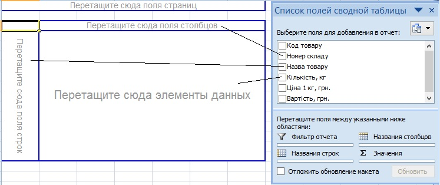
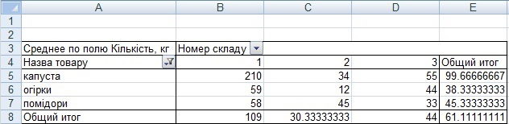

Вправа 5.3. Створення зведеної таблиці
У цій вправі створите зведену таблицю, що відображатиме сумарні кількості овочів кожного типу на кожному з трьох складів, а також середню кількість овочів одного типу на кожному зі складів.
- Відкрийте файл Вправа_5_1.xlsx та збережіть його під іменем Вправа_5_3.xlsx. Виконайте команду Дані
 Підсумки. У вікні, що відкриється, клацніть кнопку Прибрати все, щоб видалити проміжні підсумки, отримані під час виконання вправи 5.1. Таблиця набуде такого вигляду, як на рис. 5.30.
Підсумки. У вікні, що відкриється, клацніть кнопку Прибрати все, щоб видалити проміжні підсумки, отримані під час виконання вправи 5.1. Таблиця набуде такого вигляду, як на рис. 5.30. - Виділіть діапазон А1:F22 і виконайте команду Вставлення Таблиці Зведена таблиця. Буде відкрито перше вікно Майстра зведених таблиць. Нічого в ньому не змінюючи, клацніть кнопку Готово. Буде створено новий аркуш, а на ньому відображено макет зведеної таблиці, область завдань Список полів зведеної таблиці та панель інструментів Зведені таблиці.
- Дані щодо кількості овочів потрібно відображати як для кожного складу, так і для кожного товару. Тому поле Назва товару перетягніть в область рядків, а поле Номер складу - в область стовпців (рис. 5.41).
- Оскільки потрібно, щоб відображалися відомості про кількість овочів, перетягніть поле Кількість, кг в область даних.
- Також потрібно обчислити середню кількість овочів на кожному складі. Для цього клацніть двічі кнопку Сума за полем Кількість, кг і зі списку Операція вікна Поле зведеної таблиці виберіть значення Середнє.
- У таблиці відображаються дані як про овочі, так і про фрукти, а нас цікавлять тільки овочі. Тому потрібно здійснити фільтрацію за полем Назва товару. Клацніть кнопку справа від цього поля і залиште прапорці тільки біля назв овочів. Зведена таблиця набуде такого вигляду, як на рис. 5.42. Збережіть електронну книгу.

Рис. 5.41. Створення макету зведеної таблиці
Рис. 5.41. Створення макету зведеної таблиці

Рис. 5.42. Зведена таблиця
Рис. 5.42. Зведена таблиця